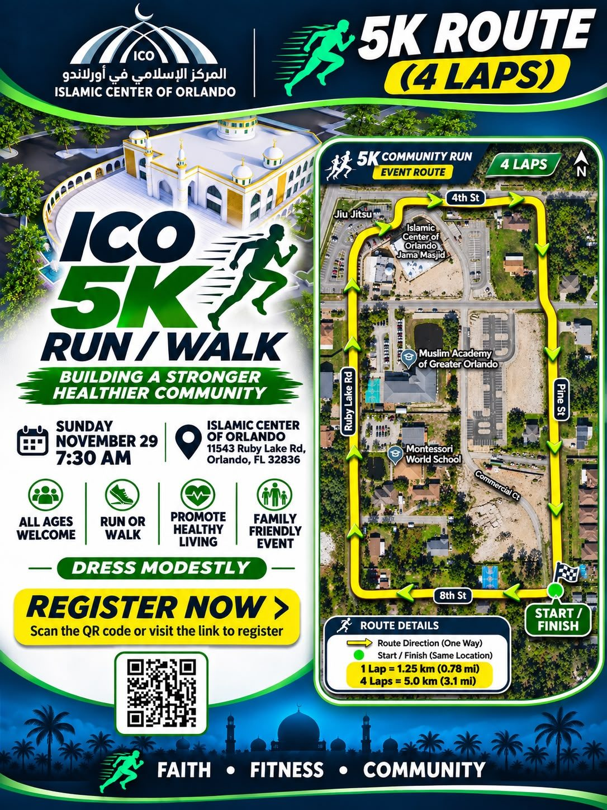

Islamic Center of Orlando · All ages · Family-friendly
ICO 5K Run & Walk
- When
- Sunday, November 29 · 7:30 AM
- Where
- ICOIslamic Center of Orlando · 11543 Ruby Lake Rd, Orlando, FL 32836Open in Maps
🏃♂️ ICO 5K RUN & WALK 2026! 💚
Faith • Fitness • Community
Bismillah! Join us for an exciting morning of fitness, unity, and community spirit at the Islamic Center of Orlando!
📅 Sunday, November 29, 2026
⏰ 7:30 AM
📍 Islamic Center of Orlando
11543 Ruby Lake Rd, Orlando, FL 32836
🏃♂️ 5K Run/Walk (3.1 Miles)
👨👩👧👦 All Ages Welcome!
💚 Family-Friendly Event
👕 Please Dress Modestly
Let's come together, stay active, and build a stronger, healthier community, InshaAllah!
📲 REGISTER NOW! Scan the QR code on the flyer to secure your spot!
📢 Spread the word, bring your family and friends, and let's make this an amazing turnout!
Register: scan the QR code on the flyer.